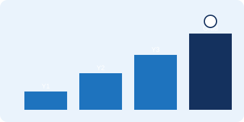

Opportunities
Opportunities by Year of Study
You do not need to wait until your final year to get started. Zone29 and its online platform, CareerZone, list opportunities for every stage of your degree — from part-time roles in Year 1 through to graduate schemes. The table below shows what is typically available and where to look for it.
Opportunities table
| Year | Opportunity | Typical Length | Find It Via |
|---|---|---|---|
| Year 1 | Talent Bank part-time roles within the University | Ongoing, flexible hours | CareerZone |
| Careers workshops, skills sessions & employer talks | 1–2 hours | Zone29 events | |
| Year 2 | Westminster Working Cultures – short international workplace visits | A few days | Zone29 – Working & studying abroad |
| Year 2 | Summer internships | 6–10 weeks | CareerZone job listings |
| Placement Year | Industrial / sandwich placement | 9–12 months | Work experience & placements (Zone29) |
| Final Year | Graduate schemes | 1–3 years | CareerZone job listings |
| The Westminster Award and Future Ready Mentoring run throughout every year of study — check Zone29 events for current dates and deadlines. | |||